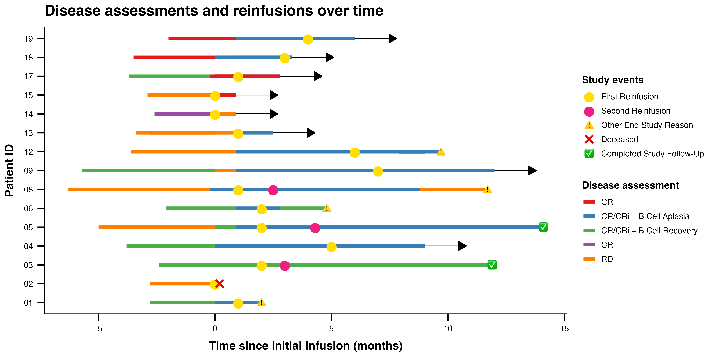

Swimmer plots with ggplot2.
ggswim extends ggplot2 with lanes, event markers, and continuation arrows for visualizing timelines. Build and customize your plot with familiar layers, scales, and themes.
- Show changes over time along each lane.
- Give events their own symbols, colours, and legend.
- Add arrows to indicate ongoing activity or follow-up.
Example: following patients through a clinical trial
Clinical trials are one application of swimmer plots. This example uses the package’s demonstration data to show disease assessments, reinfusions, and study outcomes. Each lane represents a patient; arrows indicate ongoing follow-up.

Installation
Install the development version from GitHub:
# install.packages("devtools")
devtools::install_github("CHOP-CGTInformatics/ggswim")Make this plot
Prepare the included datasets, then combine lanes, arrows, and markers in a single ggplot. Each layer can use its own data while sharing the same axes. Expand the setup block and run it before the plot code; it creates all_events and arrow_data, which the plot needs.
Click to expand: load packages and prepare the example data
library(ggswim)
library(ggplot2)
all_events <- dplyr::bind_rows(infusion_events, end_study_events)
# Add arrows only for patients without an end-of-study event.
arrow_data <- patient_data |>
dplyr::left_join(
dplyr::select(end_study_events, pt_id, label),
by = "pt_id"
) |>
dplyr::select(pt_id, end_time, label) |>
dplyr::filter(.by = pt_id, end_time == max(end_time)) |>
dplyr::filter(is.na(label)) |>
dplyr::distinct()
ggplot() +
geom_swim_lane(
data = patient_data,
aes(x = start_time, xend = end_time, y = pt_id,
colour = disease_assessment)
) +
geom_swim_arrow(
data = arrow_data,
aes(xend = end_time, y = pt_id),
arrow_head_length = grid::unit(0.15, "inches")
) +
geom_swim_marker(
data = all_events,
aes(x = time_from_initial_infusion, y = pt_id, marker = label),
size = 4
) +
scale_colour_brewer(name = "Disease assessment", palette = "Set1") +
scale_marker_discrete(
# Match styles to event categories in the order given by limits.
glyphs = c("⬤", "⬤", "⚠️", "❌", "✅"),
colours = c("#ffde00", "#ed207f", NA, NA, NA),
limits = c("First Reinfusion", "Second Reinfusion",
"Other End Study Reason", "Deceased",
"Completed Study Follow-Up"),
name = "Study events"
) +
labs(
title = "Disease assessments and reinfusions over time",
x = "Time since initial infusion (months)", y = "Patient ID"
) +
theme_ggswim()Explore more
- Getting started: build a swimmer plot step by step.
- Adding arrows: control continuation indicators and arrow legends.
- Gallery: explore custom glyphs, icons, and themes.
Contributing
Issues and pull requests are welcome. By participating, you agree to follow our Code of Conduct.